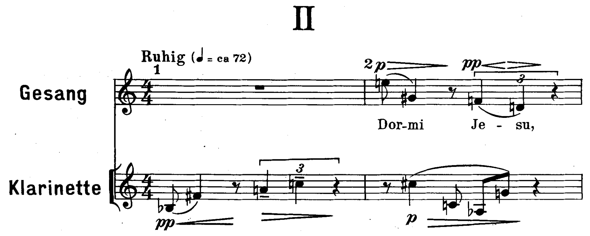
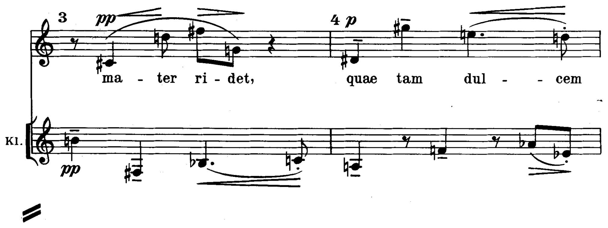
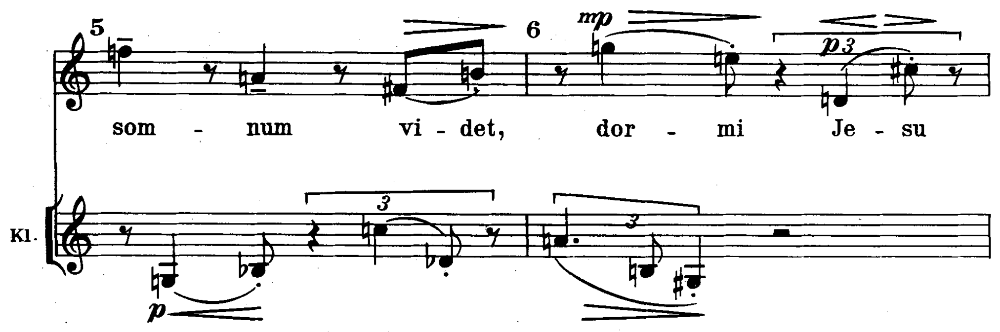
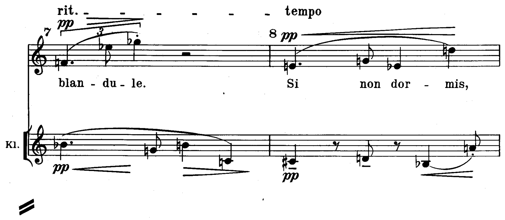
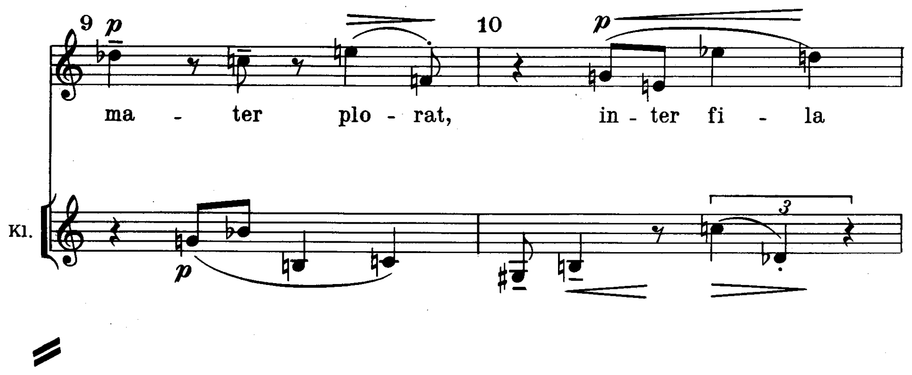
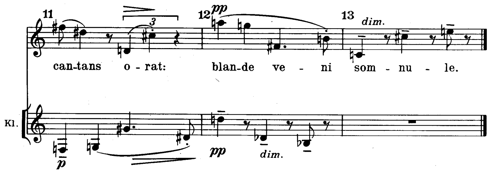

Due canoni allo specchio
«Dormi Jesu» (1924) e il secondo movimento delle Variazioni op. 27 (1935–1936): lo stesso artificio, prima della serie e dentro la serie.
La tendenza è di sviluppare tutto un pezzo da una sola idea principale, specialmente per mezzo del contrappunto imitativo, spesso rigorosamente canonico.
E. Surian, Manuale di storia della musica, IV, p. 136
«Dormi Jesu», op. 16 n. 2: il pezzo intero






- ① b. 1: il clarinetto comincia: è l’antecedente
- ② b. 2: entra la voce, una battuta dopo
- ③ b. 7: «blandule», la fine della prima strofa
- ④ b. 12: l’ultima battuta del clarinetto
- ⑤ b. 13: la voce chiude da sola
Il secondo dei Fünf Canons op. 16, per voce e clarinetto, mette in musica una ninna nanna latina che la partitura dice tratta da Des Knaben Wunderhorn: «Dormi Jesu, mater ridet, / Quae tam dulcem somnum videt, / Dormi Jesu blandule. / Si non dormis, mater plorat, / Inter fila cantans orat: / Blande veni somnule.» Tredici battute in 4/4, Ruhig, nella zona del pp e del p. Il clarinetto suona dalla b. 1 alla b. 12, la voce dalla b. 2 alla b. 13: le due parti hanno lo stesso numero di suoni, quarantasei, e lo stesso ritmo, spostato di una battuta. Nessuna delle due accompagna l’altra: sono due linee della stessa importanza, che si incrociano continuamente intorno al registro centrale.
Il canone per moto contrario, sull’asse del sol
Il clarinetto comincia con si♭–fa♯–la–do; la voce, una battuta dopo, con mi–sol♯–fa–re. Il primo intervallo del clarinetto sale di otto semitoni, quello della voce scende di otto; poi il clarinetto sale due volte di tre semitoni, la voce scende due volte di tre. Ogni intervallo è rovesciato, e i suoni stanno alla stessa distanza da un asse, il sol del registro centrale (sulla seconda linea della chiave di violino): il si♭ con cui comincia il clarinetto è nove semitoni sotto l’asse, il mi con cui risponde la voce nove sopra; il fa♯ un semitono sotto, il sol♯ un semitono sopra. Così per tutti i quarantasei suoni: il conseguente è l’inversione esatta dell’antecedente, con le stesse durate, le stesse pause e le stesse terzine, una battuta dopo. Quando il clarinetto suona il sol dell’asse, la voce risponde con lo stesso sol (bb. 2–3, 7–8, 9–10): è il solo suono che risponde a sé stesso.
Il canone è rigoroso in tre dimensioni: altezze (rovesciate sull’asse), durate (identiche) e distanza (sempre una battuta). La voce, che è il conseguente, comincia dopo e finisce dopo: la b. 13 è sola, e la voce vi canta do–do♯–mi, lo specchio dell’ultima battuta del clarinetto (re–re♭–si♭). L’ortografia, invece, non è sempre a specchio: alla b. 2 al fa♯ del clarinetto la voce risponde con un sol♯, non con un la♭. Webern rovescia i suoni, non necessariamente i nomi.
Quale voce è l’antecedente e quale il conseguente; la distanza d’entrata; l’intervallo d’imitazione o, se il canone è per moto contrario, l’asse; che cosa resta uguale (ritmo, durate, articolazioni) e che cosa no; dove il canone comincia e dove si interrompe.
Prima della serie: in che senso questo canone è «seriale»
«Dormi Jesu» non è dodecafonico. Contando i suoni del clarinetto, i tratti senza ripetizione di altezza sono di cinque, sei, al massimo sette suoni: le dodici note non vengono mai esposte in una serie. Salvetti ricorda che il metodo di Schönberg «venne adottato da Webern — ufficialmente — a partire dai Tre canti popolari op. 17 del 1924» (La nascita del Novecento, p. 225), e Galli presenta i Lieder per voce e strumenti scritti fra il 1915 e il 1926 come «una sorta di “banco di prova” per l’acquisizione della tecnica dodecafonica» (Storia della musica 3, p. 336).
Seriale, allora, nel senso che Salvetti dà alla parola per Webern: «sfruttamento rigoroso di tutte le possibilità combinatorie offerte da un certo numero di scelte preliminari. In tal senso la dodecafonia appare come un caso particolare di serialità» (p. 226). Qui la scelta preliminare è una sola: la voce è lo specchio del clarinetto, suono per suono. Una volta fatta, ogni suono della voce è determinato. Nell’op. 27, una dozzina d’anni dopo, lo specchio resta e vi si aggiunge la serie.
Chiamare «serie» qualunque successione di suoni che non si ripetono. La serie dodecafonica è un ordine di dodici classi di altezze che regge tutto il brano; un canone a specchio è un ordine fra due voci. Si possono usare insieme, come nell’op. 27, o separatamente, come in «Dormi Jesu»: l’analisi deve dire quale dei due c’è.
Le Variazioni op. 27, II: il movimento intero


- ① levare: si♭, poi sol♯
- ② b. 1: la e la: l’asse
- ③ b. 2: do♯, poi fa
- ④ bb. 3–4: gli accordi a specchio
- ⑤ b. 5: sol♯ e si♭
- ⑥ b. 7: fa♯ e do
- ⑦ b. 9: la e la
- ⑧ b. 11: si♭ e sol♯, fine della prima metà
- ⑨ b. 12: seconda metà
- ⑩ b. 13: la e la
- ⑪ b. 14 = b. 7
- ⑫ b. 15: accordi a specchio
- ⑬ b. 19: la e la
- ⑭ b. 22: si♭ e sol♯, come il levare
Il movimento dura un levare e ventidue battute in 2/4, Sehr schnell, in due metà ripetute (bb. 1–11 e 12–22). Su novanta crome ne suonano sessantadue, mai due nello stesso istante: il pezzo è una sola successione di attacchi, quasi tutti staccati, spartita fra le due mani e fra registri lontanissimi, dal si del registro grave al sol dell’acuto. Si distinguono pochi tipi di evento: la nota singola, la nota preceduta da un’acciaccatura (dodici volte), la semiminima tenuta (do♯ e fa alla b. 2; fa♯ e do alle bb. 7 e 14), l’accordo di tre suoni, accentato e quasi sempre ff (otto volte, sempre a coppie). Le dinamiche cambiano a ogni gesto, fra p, f e ff. Galli data le Variazioni 1935–1936 (Storia della musica 3, p. 336).
Lo specchio: ogni suono ha il suo rovescio, una croma dopo
Canone per moto contrario. Un canone in cui la voce che risponde (il conseguente) imita l’antecedente rovesciandone gli intervalli: ciò che sale scende, della stessa misura. È uno degli artifici contrappuntistici che la dodecafonia riprende dal contrappunto antico (D’Urso, Bertolini, 5° anno, p. 265).
Asse di simmetria. Il suono intorno al quale le due voci si specchiano: ogni suono dell’antecedente e il suono corrispondente del conseguente stanno alla stessa distanza dall’asse, uno sopra e uno sotto.
Nell’op. 27, II l’asse è il la del registro centrale (nel secondo spazio della chiave di violino). Il levare suona un si♭ acuto e, una croma dopo, un sol♯ grave: tredici semitoni sopra e tredici sotto l’asse. Alla b. 1 il la dell’asse suona due volte, in una mano e poi nell’altra: è il solo suono che è specchio di sé stesso. Alla b. 2 un do♯ otto semitoni sotto e un fa otto sopra; alle bb. 3–4 l’accordo fa♯–do–fa e, una croma dopo, do♯–fa♯–do. Così per tutti i sessantadue eventi del movimento: ogni suono ha il suo specchio una croma prima o una croma dopo, con la stessa durata, e l’acciaccatura ha per specchio un’acciaccatura.
Lo specchio fissa anche il registro. Sette suoni compaiono sempre alla stessa altezza: il la dell’asse, il si♭ e il sol♯ del levare, il do♯ e il fa della b. 2, il fa♯ e il do delle semiminime tenute. Gli altri cinque (re, mi♭, mi, sol, si) cambiano ottava, ma sempre insieme al loro specchio: al re più grave, per esempio, risponde il mi più acuto, diciannove semitoni sopra l’asse. L’estensione del pezzo, dal si del registro grave al sol dell’acuto, è a sua volta simmetrica: ventidue semitoni sotto l’asse e ventidue sopra. Webern ha costruito un canone, e insieme uno spazio sonoro chiuso, con un centro immobile.
Cercare lo specchio fra la mano destra e la sinistra. Le due voci del canone non coincidono con le mani: nella stampa si incrociano e si scambiano di mano continuamente. Lo specchio si cerca fra suoni consecutivi a una croma di distanza, qualunque mano li suoni.
Le due voci del canone, e le forme della serie
B23La serie dell’op. 27, p. 262: mi♭ si si♭ re do♯ do fa♯ mi sol fa la sol♯ (3 11 10 2 1 0 6 4 7 5 9 8); l’inizio della I variazione, p. 264 · D. D’Urso, C. Bertolini, Il linguaggio della musica, 5° anno.
| Battute | Antecedente (comincia con il si♭ del levare) | Conseguente (comincia con il sol♯ grave) |
|---|---|---|
| 0–6 | RI da si♭ | R da sol♯ (la serie del libro, letta a rovescio) |
| 6–12 | RI da mi♭ | R da re♯ |
| 12–17 | RI da sol♯ | R da si♭ |
| 17–22 | R da do♯ | RI da fa |
Separando i suoni di ogni coppia fra le due voci, l’antecedente percorre quattro forme della serie e il conseguente le quattro forme speculari: dove l’una ha un RI, l’altra ha un R, perché l’inversione di un RI è un R. Il conseguente comincia con la serie del libro letta dall’ultima nota: sol♯–la–fa–sol–mi, poi l’accordo do♯–fa♯–do (i suoni 6–8, insieme), re–si♭–si–mi♭. Le serie si legano una all’altra su un suono comune: l’ultimo suono di una è il primo della seguente. Il primo legame cade alla b. 6, sull’acciaccatura mi♭ dell’antecedente e sul re♯ del conseguente, che è il suo specchio.
Le forme non sono state dichiarate da Webern: si ricavano dall’analisi, e la divisione dei suoni fra le due voci si sceglie coppia per coppia. Le divisioni che danno a ciascuna voce serie complete sono più d’una, ma usano tutte le stesse otto forme: cambia soltanto quale voce prosegue quale catena nei punti di legame (in un’altra divisione possibile, per esempio, le due catene si scambiano alla b. 6). Quella della tavola è la più semplice: ciascuna voce cambia tipo di forma una volta sola. Natoli osserva che nell’op. 27 Webern «svela la serie originale solo all’inizio della terza variazione» (Percorsi di analisi musicale, p. 286): anche qui la serie non si presenta mai come una melodia che si ascolta, ma come un ordine distribuito fra due voci, due mani e quattro ottave.
Al lavoro: le coppie delle bb. 15–18
Sulla partitura delle bb. 15–18 forma tutte le coppie di specchio. Per ogni coppia scrivi i due suoni, la battuta e la croma di ciascuno, e la distanza in semitoni di ciascun suono dal la dell’asse.
Sintesi
«Dormi Jesu»: un canone per moto contrario a due voci, alla distanza di una battuta, sull’asse del sol, rigoroso per tutti i quarantasei suoni, senza serie. Op. 27, II: un canone per moto contrario alla distanza di una croma, sull’asse del la; le due voci percorrono quattro forme della serie ciascuna, R e RI, legate su un suono comune, e lo specchio fissa anche il registro di ogni suono.
La serie si cerca prima di tutto nelle relazioni (lo specchio, le coppie, i legami fra le serie), poi nelle note. Quando la partitura non dice quale voce è quale, l’analisi sceglie e dichiara la scelta.
La lezione si chiude con il solfeggio: si leggono a nomi, in tempo, le bb. 2–4 della voce di «Dormi Jesu», battendo la semiminima e dividendo con cura le terzine. La lezione seguente è l’analisi integrale scritta dell’op. 27, II.
Compiti per la prossima volta
1 · Scritto: Un canone allo specchio
Continua l’antecedente e scrivi un canone per moto contrario a due voci di otto battute, alla distanza di una battuta, con l’asse sul la del secondo spazio.
Sul quaderno, a matita. La foto del lavoro finito va su Classroom. Nel Workbook: apri l’esercizio C5-U8-L8-01 ↗
Compiti per la prossima volta
2 · Solfeggio e 3 · dettato
Ogni pezzo a tempo, senza fermarti: il parlato a nomi, il cantato prendendo il primo suono dalla tastiera, il ritmico battendo la pulsazione.
Scrivi la melodia sul quaderno, in chiave di violino: otto battute in 4/4, do maggiore. Il primo suono è sol. Prima il riferimento, poi tutto due volte, ogni coppia di battute due volte, il collegamento 1–4, 3–6 e 5–8, e tutto per controllare.
Il riferimento: accordo di tonica e primo suono
Il dettato · otto battute
Le sezioni (riferimento, tutto, le coppie, il collegamento) si ascoltano una per una e si ripetono quanto serve; le fasi fanno la procedura della classe, con gli annunci e le pause, da qualunque punto.
Sul quaderno scrivi in testa la sigla C5-D-U08-L8. Si corregge all’inizio della prossima lezione.
Compiti per la prossima volta
Scrittura: contrappunto e armonia
Scrivi un contrappunto di terza specie (quattro note contro una) sopra il canto fermo, in modo misolidio (finale sol): undici battute. Comincia su una consonanza perfetta, alla cadenza la sensibile sale alla finale, niente quinte e ottave consecutive.
Sul quaderno, con la sigla C5-CP-U08-L8 in testa; la foto va su Classroom.
Realizza a quattro parti il basso senza numeri: sedici battute in 4/4, mi minore. Trova tu l’accordo di ogni nota (la regola dell’ottava è il punto di partenza) e scrivilo sotto; poi il soprano, poi le voci interne. Accordi che puoi usare: tutto quello studiato, e una modulazione a un tono vicino.
Sul quaderno, con la sigla C5-BD-U08-L8 in testa; la foto va su Classroom.
Armonizza a quattro parti il canto dato: sedici battute in 4/4, re minore. Prima le cadenze, poi il basso per intero, e solo alla fine contralto e tenore. Accordi che puoi usare: tutto quello studiato, e una modulazione a un tono vicino. La melodia modula: trova dove, e in quale tonalità arriva.
Sul quaderno, con la sigla C5-CD-U08-L8 in testa; la foto va su Classroom.
Testo per il registro elettronico
Scritto: Un canone allo specchio (Workbook, esercizio C5-U8-L8-01), sul quaderno; la foto va su Classroom. Solfeggio dal quaderno di lettura: cantato n. 516, 517 (a tempo, senza fermarsi). Dettato C5-D-U08-L8 dalla pagina della lezione (sezioni da ascoltare, o le fasi della procedura guidata), sul quaderno con la sigla. Contrappunto di terza specie sul canto fermo (C5-CP-U08-L8). Basso senza numeri da realizzare a quattro parti (C5-BD-U08-L8). Canto dato da armonizzare a quattro parti (C5-CD-U08-L8).
In classe
Leggiamo insieme: cantato
Si prende il tono dalla tastiera, si canta insieme; poi a gruppi.
Apri il n. 514 nel quaderno di lettura ↗ chiave di violino · 6/8 · sol maggiore
Apri il n. 515 nel quaderno di lettura ↗ chiave di violino · 2/4 · re maggiore